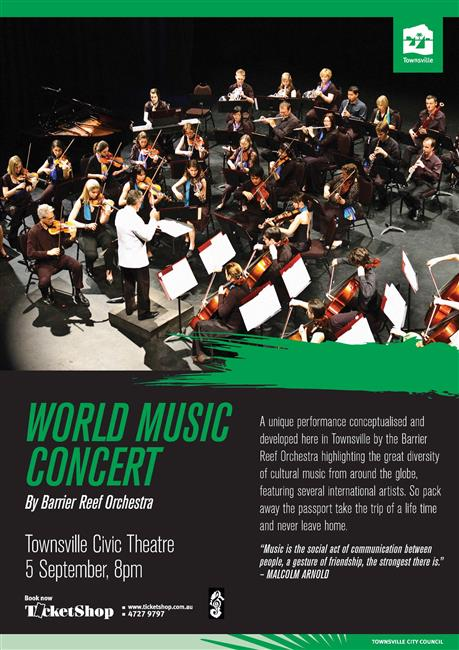

Guest conductor:
Mario Dobernig
Guest Artists:


| Conductor: | Andrew Ryder |
|---|---|
| Soloists: | Adam Lopez, Domenico Taraborrelli, David Hudson, John Ferguson, Cynthia Clark |
| Program: | |
| John Williamson, arr. Andrew Ryder Raining on the Rock | |
| Soloist: David Hudson Didgeridoo, guitar, vocal | |
| Traditional, arr. Andrew Ryder, With my Swag Barrier Reef Orchestra | |
| Sean Thorne, Matthew Creek | |
| John Barnes Chance Korean Folk Music Barrier Reef Orchestra | |
| Vittorio Monti, arr. Robert Clark Czardas | |
| Soloist: Domenico Taraborrelli, Accordian | |
| Traditional, arr. Robert Clark Italian Medley | |
| Soloist: Domenico Taraborrelli, Accordian | |
| George Gershwin Cuban Overture Barrier Reef Orchestra | |
| Joe Darion & Mitch Leigh Man of La Mancha | |
| Soloist: Adam Lopez | |
| arr. Andrew Ryder, Matthew Creek | |
| Jackson Jr., Peter/Gerald Jackson Turn the Beat Around | |
| Soloist: Adam Lopez | |
| arr. Adam Lopez | |
| David Foster, arr. Chris Brindley The Prayer | |
| Soloist: Adam Lopez | |
| Aaron Copland Fanfare for the Common Man Barrier Reef Orchestra | |
| Aaron Copland Rodeo. Mov 3 & 4 Barrier Reef Orchestra | |
| Traditional, Cumana | |
| Soloist: Domenico Taraborrelli | |
| Arr. Robert Clark Accordian | |
| Percy Grainger Irish Tune From County Derry Barrier Reef Orchestra | |
| Traditional, arr. Andrew Ryder Toss the Feathers Barrier Reef Orchestra | |
| Matthew Creek | |
| Soloist: John Ferguson | |
| Matthew Creek Piper | |
| Vocalist: Cynthia Clark | |
| Traditional, arr. Andrew Ryder Highland Cathedral | |
| Soloist: John Ferguson | |
| Matthew Creek Piper | |
| William Walton Crown Imperial Barrier Reef Orchestra | |
| arr. Sean O’Boyle Till the End of Time | |
| Soloist Adam Lopez | |
| Hugo Blanco arr. Sean O’Boyle Moliendo Café | |
| Soloist: Adam Lopez | |
| Ruiz & Gimble arr. Graham Payne Sway | |
| Soloist: Adam Lopez | |
| Bruce Woodley arr. Graham Lloyd I am Australian Barrier Reef Orchestra | |
| Adam Lopez, David Hudson | |
| Cynthia Clark, Domenico Tarborrelli |
Guest conductor:
Mario Dobernig
Guest Artists: